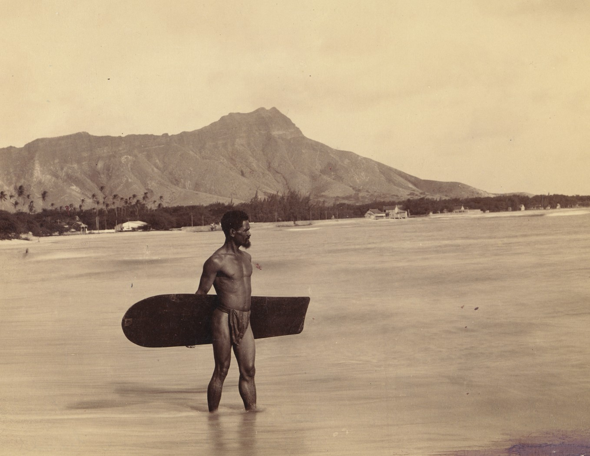
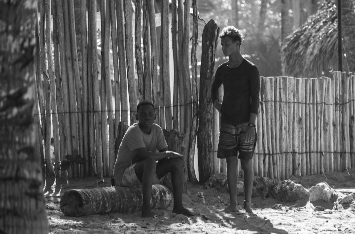
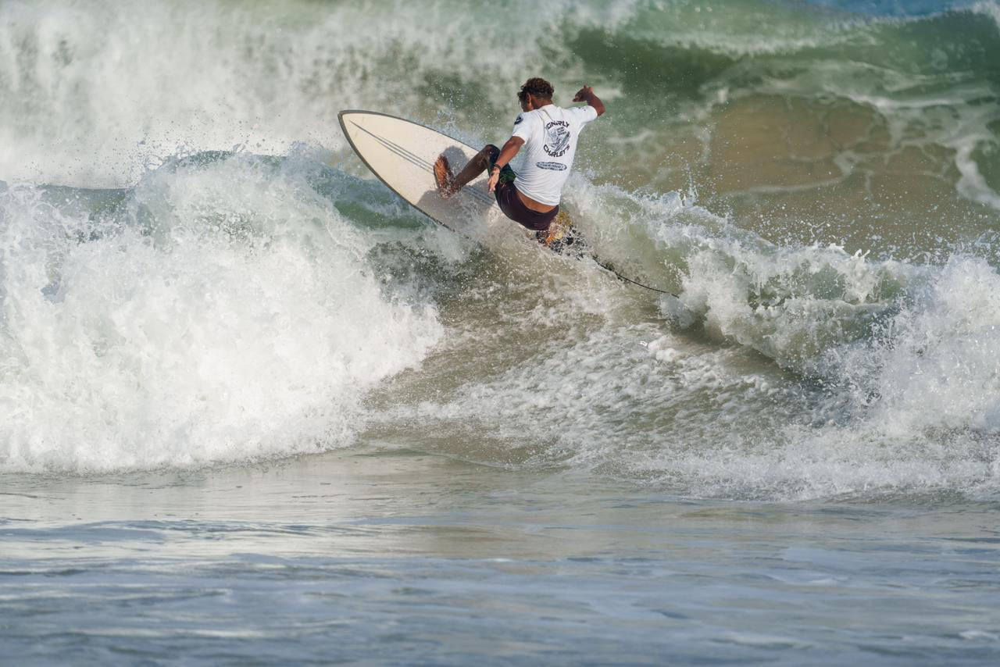

  
El surf es un deporte acuático de superficie en el que un surfista utiliza una tabla para deslizarse sobre la sección delantera o la cara de una ola en movimiento, que normalmente lleva al surfista hacia la orilla. Las olas adecuadas para el surf se encuentran principalmente en las costas oceánicas. Sin embargo, también se pueden encontrar en olas estacionarias en mar abierto, lagos y ríos o piscinas de olas.
Se tiene constancia de la presencia del surf desde hace más de 500 años en las islas de Polinesia. El explorador inglés James Cock llegó a Hawái en 1778, donde conoció el Bodysurfing (similar a este deporte pero sin tabla) y el Bodyboard.
Pero es en el norte de Perú, donde se encuentran las primeras evidencias de personas practicando dicho deporte. Estas se encuentran en uno de los huacos (cerámicas preincaicas) donde se muestra a un hombre sobre algo similar a un trozo de madera deslizándose sobre las olas.
Esto sitúa los orígenes de este deporte en América del Sur, aunque serían los polinesios los que siglos más tarde llevarían el gusto por el surf hasta lugares como Hawái.
Dentro del surf "de tabla", o surf propiamente dicho, existen 3 categorías básicas dependiendo del tamaño y tipo de tabla:
Tabla intermedia (ingl. Funboard): Miden entre 2,10 y 2,75 m. Representan el punto intermedio después del longoboard, ya que son perfectas para adquirir las habilidades que todo surfista desea. Son polivalentes y fáciles de usar en cualquier situación, fusionando las características de las tablas cortas (maniobrabilidad) y largas (estabilidad y flotabilidad) siendo útiles para remontar olas grado 3 y 4 sin dificultad alguna.
Tabla corta (ingl. Shortboard): De envergadura entre 1,50 y 2,10 metros, se necesita una experiencia mínima pero pierden flotabilidad y estabilidad en comparación con las tablas intermedias y largas, se pueden utilizar en olas grandes o pequeñas.
Tabla larga (ingl. Longboard): De longitud igual o superior a 2,75 m. Representan el estilo clásico de los 50s y 60s el cual da origen al surf actual. Al ser de buen tamaño sirven para surfear olas desde muy pequeñas hasta las más temerarias fácilmente (grado 2, 3 y 4). Por ello junto a las intermedias son consideradas todoterreno.Suelen utilizarlas las personas con menos nivel de experiencia